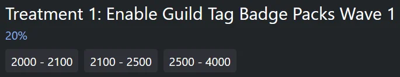
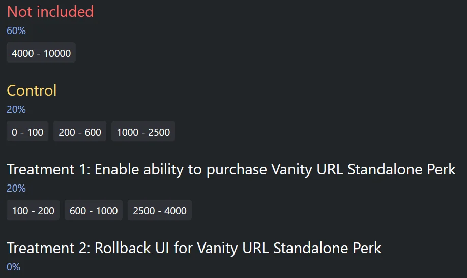
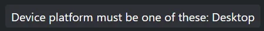

You probably asked this before: "how do I get access to this?" or "does anyone else have this?"
Discord uses A/B Testing to roll out new features, also known as Experiments. The idea is simple: Group A is given access to a new feature Discord is testing, while Group B is not, and is often even unaware of it. Before we dive into specifics, here's a few words you'll see mentioned in this post:
- Experiment: a new setting, re-design or feature Discord is working on and testing.
- Rollout: in different words, how many people or servers can use or see an experiment.
- Treatment: a specific version of the experiment, you'll always find at least 2 of them (A/B)
- Range: a group of users put together to receieve any given treatment of an experiment.
- Override: an exception to manually grant the experiment to a user or server, no matter what.
- User experiment: this experiment applies strictly to users (such as the UI re-design)
- Server experiment: this experiment applies strictly to servers (such as the new boosting perks)
Please note that experiments are in-development features that are being tested. As such, they may drastically change over time, or even be scrapped entirely by the end of the experiment.
Are experiments random?
Yes, the system that determines who does or doesn't get an experiment is random. It's based on a mathematical algorithm:
result = mmh3.hash('exp_name:resource_id', signed=False) % 10000
Using this method, everyone is assigned a number between 0 to 10,000. In a manner of speaking, this is your position in line to use or see any given experiment, though this is a simplification of the process. Your number can give you an estimation for when you'll get the experiment, but it's not the whole truth.
So how do the rollouts work?
You'll often see people speak about percentages: "this feature is currently available to 5% of users." That percentage directly links back to your number as explained earlier. A rollout of 5% implies users with numbers between 0 and 500 have access. This range of numbers is also called a Group Range, or just a "Group" or Range."
Generally speaking, groups start from 0 and go up to 10,000. Though uncommon, nothing stops the developers from starting about anywhere; that 5% could also be a range of 7200-7700, or may even consist of multiple ranges such as "750-1000 + 5000-5250" or even "0-100, 4300-3500 and 7550-7750"
When a rollout increases by any percentage, it adds new group ranges, which means more people can use or see the experiment. The control group is usually also increased up to a certain point (explained in the next section below)

Why do experiments have different treatments?
Treatments are different versions of any given experiment. You'll find at least 2 different treatments on each experiment, amd they are generally the most important ones: Control and Treatment 1 (Group A and B)
One group has the experiment, the other doesn't. The one that does not is called Control, and while you may not have access to the treatment, you are actively part of it. The control group is used to collect information relevant to an experiment. This information is then compared to users in Treatment 1.
Despite it being called "A/B Testing". there can be as many groups as Discord needs, you may sometimes spot a Treatment 2 or Treatment 3, in some cases even more. This is usually when an experiment has multiple different designs; a different treatment might have a fancier or bigger button somewhere.
Users in control usually do not get access until it is ready and heading for a full release or at release.

Users in the "Not included" group are not included in any way whatsoever. Their fate is still undecided.
Are rollouts impacted in any other way?
Aside from just getting lucky, you will also need to fulfill Filter rules. Though filters are optional and not present most of the time, they fine tune availability of an experiment. For example, a certain experiment will only appear on a server if it has at least 1000 members, assuming it falls within that lucky range in the first place.
Filters may also be used to specify platforms, like "Android only". They can exclude servers from the experiment by requiring it to have been created before or after a specific date and time or for a specific condition to be met, such as the server being discoverable.
It's important to note that any given experiment can have multiple filters, and that they all have to be fulfilled, thus strictly curating access to the experiment to only those that meet all the criteria.

I've heard people mention Overrides, what are those?
Overrides are really relevant to us, but it's good to know what they actually entail. Overrides are used by Discord to force enable experiments for users and experiments outside the regular A/B system. If you're ever told the rollout of an experiment is 0%, but see it in a server regardless, it means it has an override.
Overrides are almost always limited to Discord employees and internal servers. They may also be given to users in Discord's inner circle or those in various bug hunter/testing programs. Rarely, certain experiment can be "applied for" in certain servers (i.e Discord Admins) or via Feedback Surveys. Examples of such experiments are Channel Summaries and Flag to Mods, respectively.
Can I somehow keep track of all this myself?
Yes, you can track server experiments for yourself through sites like nelly.tools. You can browse experiments, view their rollout progress and history, see different treatments and their group ranges and even easily calculate your position for a specific treatment to see where you currently fit in.
IMPORTANT: Only server experiments can be readily tracked. User experiments are considerably harder and unreliable to track, so information on those is very limited. You'll hear news about them from dataminers directly such as Discord Previews & Wumpus Central.
Want a more technical explanation? Visit https://docs.discord.food/topics/experiments